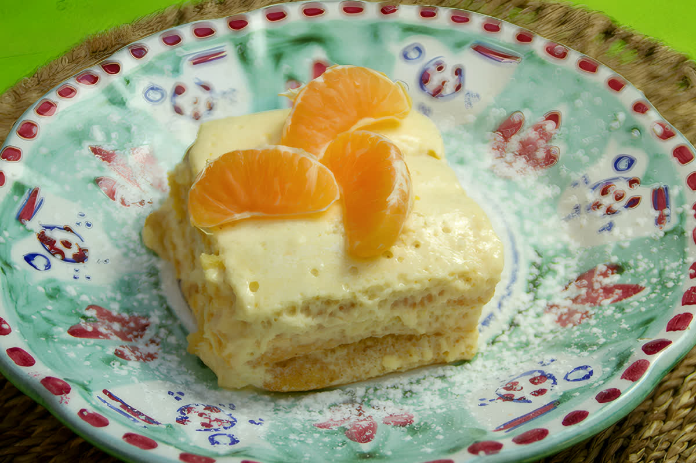
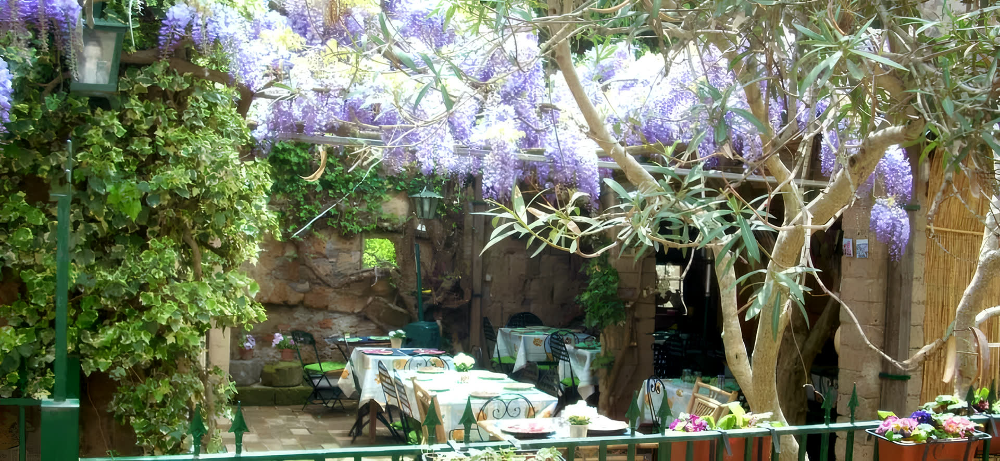
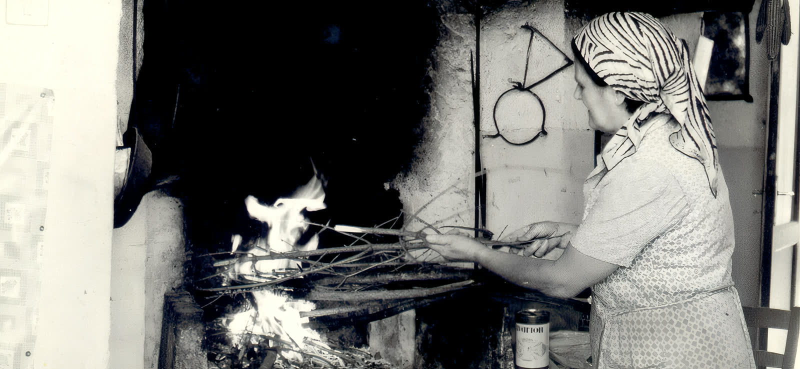
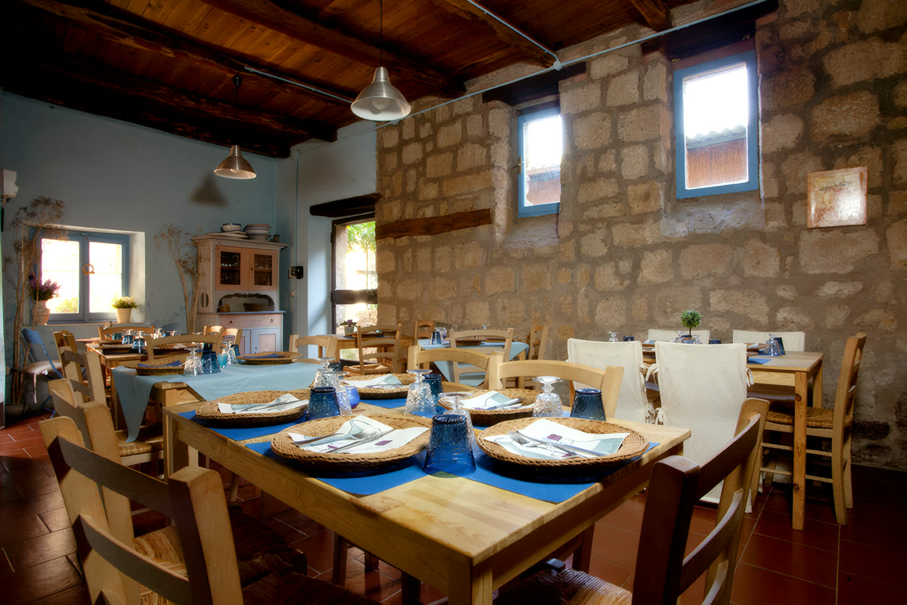
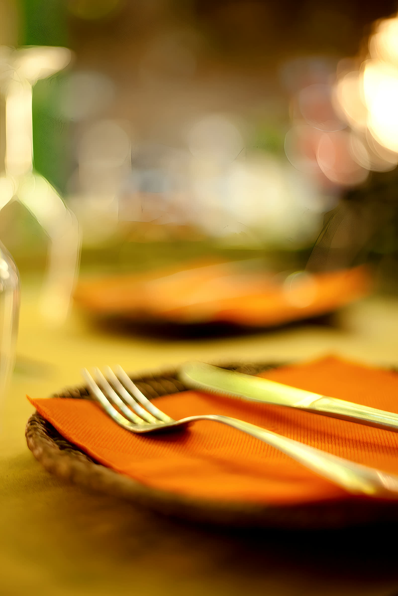
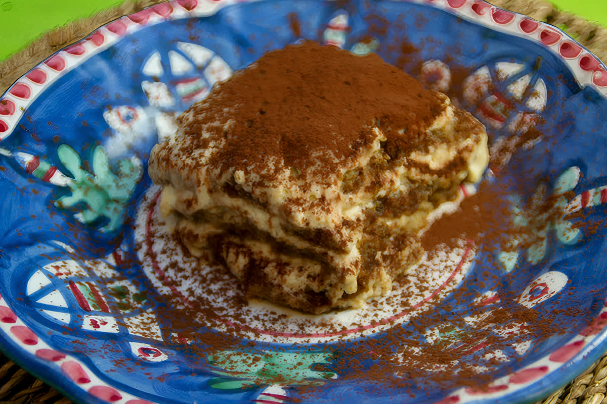
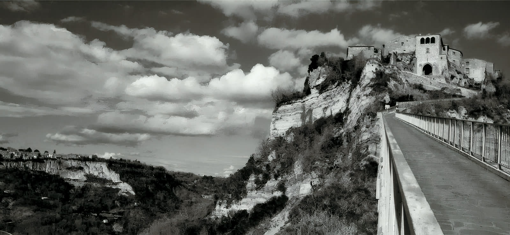

Al mandarino
Osteria dal 1968 · Civita di Bagnoregio
Al Forno di Agnese
Sale all'aperto sotto una pergola di glicine e una stanza in pietra, dentro il borgo dove si arriva soltanto a piedi, passando il ponte.
Aperta nel 1968
Sotto la pergola
Si arriva a piedi

La fondatrice
1968L'osteria l'ha aperta la nonna.
«L'Osteria al Forno di Agnese nasce nel 1968, aperta proprio dalla Signora Agnese, nonna degli attuali titolari.»Nella fotografia è lei, che accende il forno con le fascine. Da allora in cucina si fa la stessa cosa: le antiche ricette di Civita che si tramandano da generazioni, tutte fatte in casa.
58anni di osteria
Nonna e nipotichi sta in cucina
Dove si mangia
Due sale, una sotto il glicine.
«Con sale sia all'aperto, sotto una splendida pergola, sia al chiuso, in una stanza con arredamento caratteristico, potrete degustare i nostri cibi nell'atmosfera che solo Civita di Bagnoregio sa offrire.» La presentazione dell'osteria

In cucina
Ricette di qui, fatte in casa.
«Antipasti caserecci preparati con prodotti genuini e conditi dall'olio extravergine d'oliva di nostra produzione.»La ricerca è quella delle ricette antiche di Civita, alcune quasi perdute: paste ripiene, ravioli, zuppe e primi caserecci, con qualche accostamento nuovo che sul menù si riconosce subito.
- Olio extravergine di produzione dell'osteria
- Sedanini disponibili anche in versione senza glutine
- Vini da tutta Italia, con un occhio alle produzioni del centro

I dolci
Un gusto per stagione
Il tiramisù dell'osteria non è uno solo: cambia con il periodo dell'anno, e sono quattro.

Al caffè
Il borgo
Si arriva a piedi, dal ponte.
«La Città che Muore. Così viene denominata Civita di Bagnoregio da quando il nostro concittadino Bonaventura Tecchi, scrittore e germanista, la descrisse in un suo celebre racconto.» Bonaventura Tecchi, citato dall'osteria
Civita sta su uno sperone di tufo, tra la Valle dei Calanchi: l'unico accesso è il ponte pedonale. L'osteria è dentro il borgo, in Via S. Maria del Cassero: dopo il ponte, ancora due passi.
Gallery
L'osteria, com'è davvero.
Fotografie dell'osteria e dei suoi piatti. Clicca per ingrandire.
Prenota
Il tavolo si prenota per telefono.
Una telefonata basta: la prenotazione via email non viene presa.
Prenotazioni
Solo per telefono, non via email.
A pranzo di sabato, domenica e nei giorni festivi non si prendono prenotazioni.